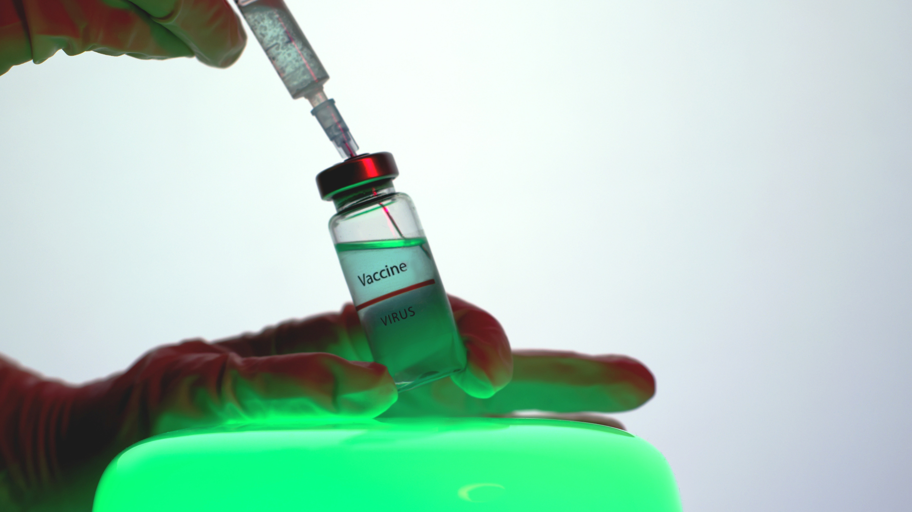
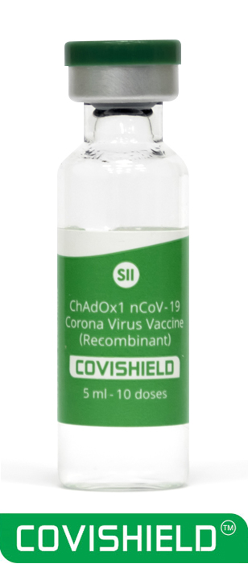

COVID-19 vaccines which are licensed in India
Two vaccines that have been granted emergency use authorization by the Central Drugs Standard Control Organization (CDSCO) in India are Covishield® (AstraZeneca's vaccine manufactured by Serum Institute of India) and Covaxin® (manufactured by Bharat Biotech Limited).

COVAXIN- India's First Indigenous COVID-19 Vaccine
COVAXIN®, India's indigenous COVID-19 vaccine by Bharat Biotech is developed in collaboration with the Indian Council of Medical Research (ICMR) - National Institute of Virology (NIV).
The indigenous, inactivated vaccine is developed and manufactured in Bharat Biotech's BSL-3 (Bio-Safety Level 3) high containment facility.
The vaccine is developed using Whole-Virion Inactivated Vero Cell derived platform technology. Inactivated vaccines do not replicate and are therefore unlikely to revert and cause pathological effects. They contain dead virus, incapable of infecting people but still able to instruct the immune system to mount a defensive reaction against an infection.

COVISHIELD
The Serum Institute of India Pvt. Ltd. (SIIPL) COVISHIEL Vaccine to prevent
Coronavirus Disease 2019 (COVID-19) caused by SARS-CoV-2.
The COVISHIELD is a vaccine and may prevent you from getting COVID-19 disease.
The COVISHIELD is approved for restricted use in emergency situation vaccine that may prevent
COVID-19 disease in individuals 18 years of age and older.
The COVISHIELD™ vaccination course consists of two separate doses of 0.5 ml each. The second
dose should be administered between 4 to 6 weeks after the first dose. However, there is data
available for administration of the second dose up to 12 weeks after the first dose from the
overseas studies
Will COVID-19 vaccine be given to everyone simultaneously?
Based on the potential availability of vaccines the Government of India has selected the priority groups who will be vaccinated on priority as they are at higher risk. The first group includes healthcare and frontline workers. The second group to receive COVID-19 vaccine will be persons over 60 years of age and persons between 45 and 59 years of age with comorbid conditions.
Eligible individuals will be registered by the government as beneficiaries. The eligible beneficiaries will be informed through their registered mobile number through an SMS, regarding the health facility where their vaccination will happen, and the time of vaccination
COVAXIN VS COVISHIELD
| | COVAXIN | COVISHIELD |
|---|
| DEVELOPED BY | BHARAT BIOTECH ICMR | SERUM INSTITUTE OF INDIA |
| VACCINE TYPE | INACTIVATED | NON REPLICATING VIRAL VECTOR |
| EFFICACY | N/A | DCGI: 70.42% OVERALL |
| STORAGE TEMPARATURE | 2-8 DEGREES CELSIUS | 2-8 DEGREES CELSIUS |
| DOSES | 2 DOSES (0,14 DAYS) | 2 DOSES (GAP OF 2.5 TO 3 MONTHS) |